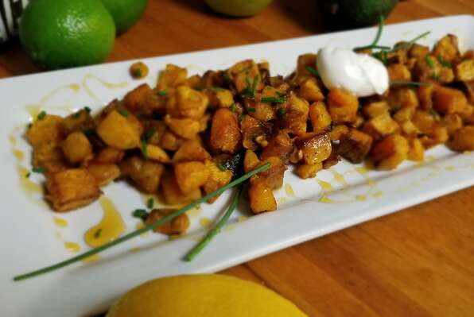

Roasted Butternut Squash

What is it?
Whether you are looking for a simple side to bring to Thanksgiving dinner, or if you want to shake up your weeknight roasted vegetable routine, this roasted butternut squash hits the spot.
Ingredients:
- 1 butternut squash - peeled, seeded, and cut into 1-inch cubes
- 2 tablespoons olive oil
- 2 cloves garlic, minced
- salt and ground black pepper to taste
Steps:
- Preheat oven to 400 degrees F (200 degrees C).
- Toss butternut squash with olive oil and garlic in a large bowl. Season with salt and black pepper. Arrange coated squash on a baking sheet.
- Roast in the preheated oven until squash is tender and lightly browned, 25 to 30 minutes.